パリと京都の比較
Mikiya Matsuzaka & SuperGrok
🎯 パリと京都の比較をして。
⏩️ **パリと京都の比較**
両都市は歴史的な首都として世界的に有名で、文化的・観光的な魅力が強く、姉妹都市的な関係（友情盟約）もあります。パリは華やかな西洋の象徴、京都は日本伝統文化の中心として対比されることが多いです。以下に主なポイントをまとめます。
### 1. 基本情報（規模・人口）
- **パリ**：市域約105km²、人口約204万人（都市圏約1,300万人）。人口密度が高く（約19,000人/km²）、コンパクトで活気あふれる大都市。
- **京都**：市域約828km²、人口約143万人。密度は低め（約1,700人/km²）で、自然や寺院が広がるゆったりした街。
**違い**：パリは密集したヨーロッパ型都市、京都は山々に囲まれた盆地で緑が多い。
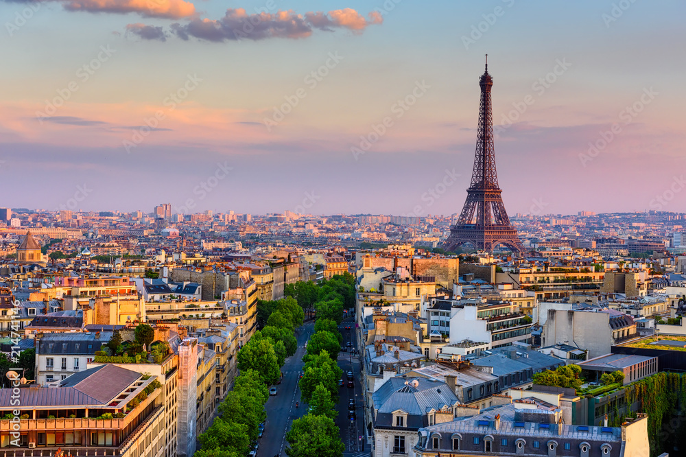
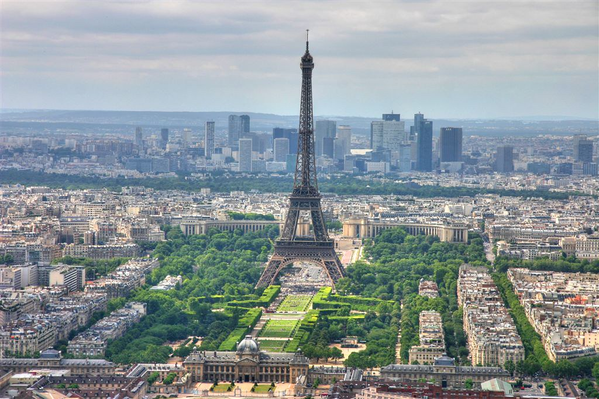
（パリのスカイライン：エッフェル塔を中心とした近代的・歴史的景観）
### 2. 歴史
- **パリ**：ローマ時代から発展し、17世紀以降は「光の都」として文化・ファッション・芸術の中心。ルイ14世やナポレオン時代の影響大。
- **京都**：794年（平安京）から約1,000年以上日本の首都。江戸時代まで政治・文化の中心で、明治維新後も伝統を強く残す。
両方とも長い歴史を持ち、世界遺産級の建造物が多いですが、パリは革命・近代化の象徴、京都は天皇・仏教文化の連続性が高いです。
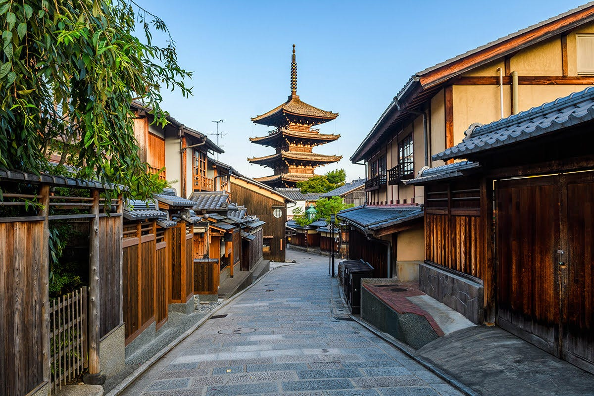
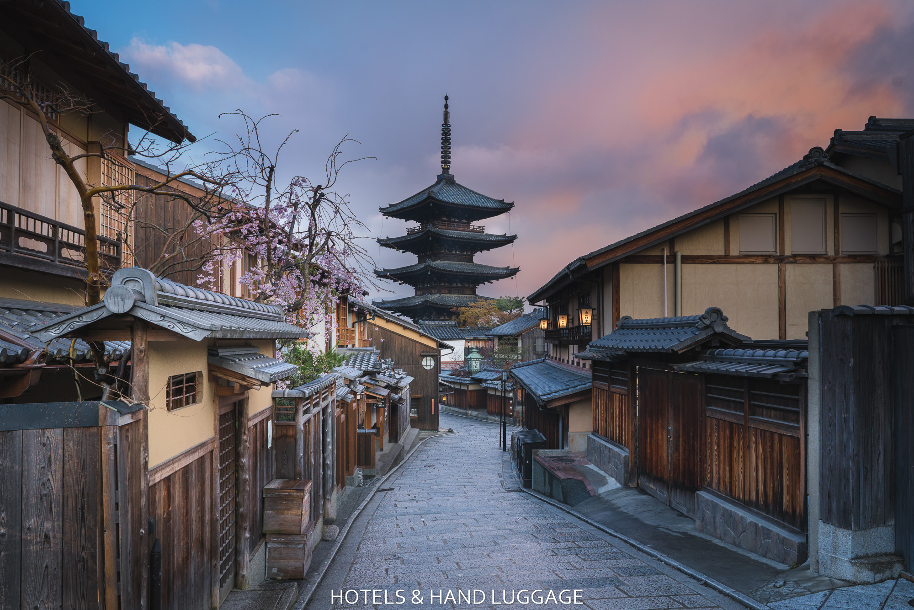
（京都の伝統的な街並み：寺院と木造建築）
### 3. 気候
- **パリ**：温帯海洋性気候。年間平均気温約12℃。夏は20℃前後、冬は3-5℃と穏やか。降水は一年中均等。
- **京都**：湿潤亜熱帯気候。夏は蒸し暑く（30℃超）、冬は寒く（0℃前後で底冷え）。四季の変化が鮮明で、桜や紅葉が美しい。
京都の方が気温差が大きく、季節のコントラストを楽しめます。
### 4. 文化・観光
- **パリ**：ルーブル美術館、ノートルダム大聖堂、エッフェル塔、シャンゼリゼなど。ファッション、芸術、音楽の中心。ロマンチックで洗練されたイメージ。
- **京都**：金閣寺、清水寺、嵐山、伏見稲荷など寺社仏閣多数（UNESCO世界遺産）。伝統芸能（能・茶道）、祇園の芸妓文化。静寂と自然の調和。
**共通点**：観光客が多く、歩いて回れる歴史地区がある。
**違い**：パリは近代アート・カフェ文化が強い。京都は神社仏閣巡りや季節の行事（祭り）が中心。
### 5. 食文化
- **パリ**：フランス料理（ワイン、チーズ、クロワッサン、高級レストラン）。洗練されたガストロノミー。
- **京都**：京料理（懐石、湯葉、和菓子）。素材の味を活かした繊細さ。おばんざいや抹茶文化。
両方「美食の都」ですが、パリはボリュームと多国籍、京都は季節感とミニマリズム。
### 6. 生活・コスト
- パリの方が物価・家賃が高め（生活費が京都の2倍近く）。
- 京都は住みやすいが、観光客増加による混雑が課題。パリは国際的・多文化、京都は伝統を守る「いけず」な気質も。
### まとめ：どちらがおすすめ？
- **華やかさ・芸術・ショッピング** → **パリ**
- **伝統・静けさ・四季の美** → **京都**
似ているようで全く違う魅力があります。実際に訪れると「京都人はパリを意識するが、パリ人は京都をあまり意識しない」という面白い指摘もあります。
両方を旅するルートも人気です！ 興味がある側面（例: 食べ物や建築）を詳しく知りたい場合、教えてください。
🎯 道路が対照的だよね？
⏩️ **はい、道路（街路）の対照がめちゃくちゃ面白いポイントです！**
パリと京都の街並みの印象を大きく左右しているのが、まさにこの「道路の性格」の違い。歩いてみると体感が全く違います。
### パリの道路：壮大で放射状・ワイド
- **19世紀のハウスマン大改造**で一変。ナポレオン3世時代に旧市街をぶち壊して、**幅広い大通り（ブールバール）**を放射状に整備。
- 代表例：シャンゼリゼ通り（約70m幅）、凱旋門から星型に広がる道。
- 目的：交通の効率化＋反乱鎮圧（広い道で軍隊が動きやすい）、美しい景観。
- 特徴：並木道、カフェのテラス、車と歩行者が共存しやすいスケール感。直線的で開放的、ドラマチック。
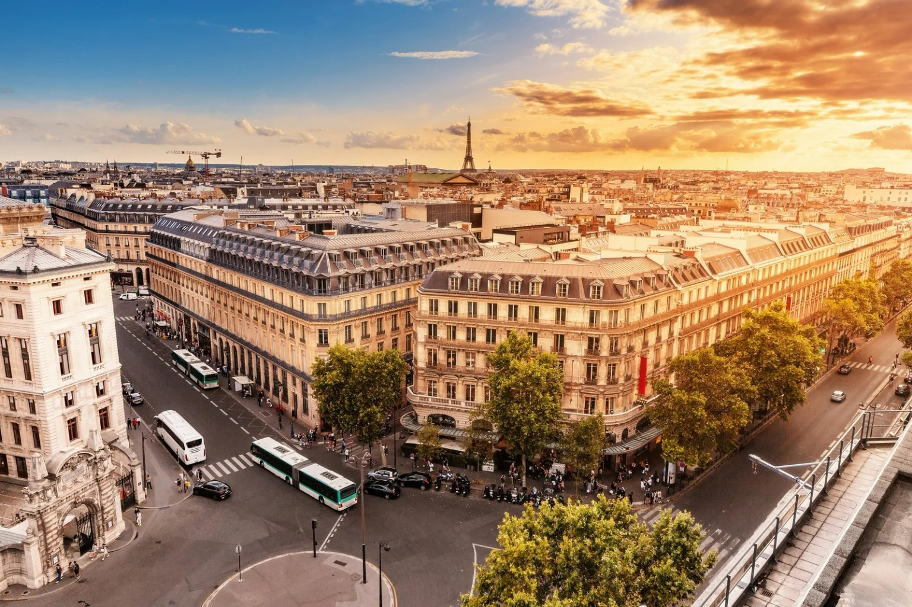
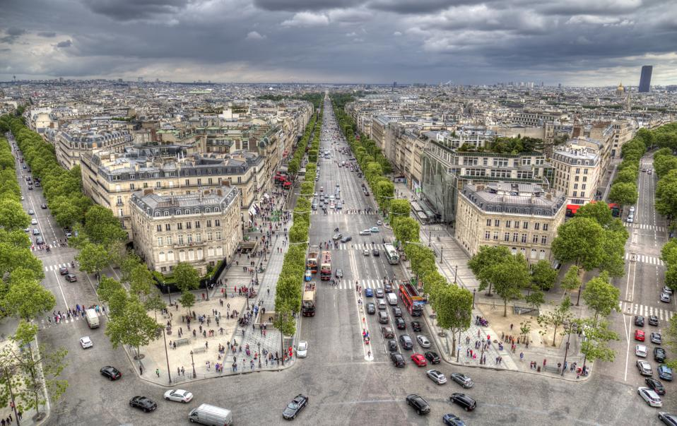
（パリの典型的なワイド・ブールバール。建物が高く統一感があり、遠くまで見通せる）
### 京都の道路：碁盤の目＋細い路地
- **平安京の計画都市**として作られた**碁盤目（グリッド）**。東西南北に整然と道が走る（中国の長安を模倣）。
- しかし中心部は**狭い路地（小路）が密集**。四条通や御池通のような幹線は広いが、脇道は車1台がやっと、または歩行者優先。
- 特徴：町家が連なる石畳や土壁の路地、季節の風情。隠れた寺院や店を発見する「迷路感」。車が苦手で歩きやすいが、混雑時は窮屈。
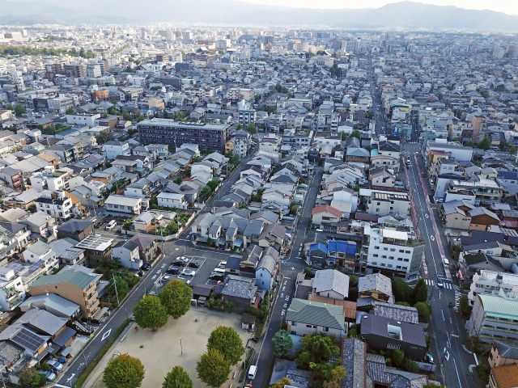
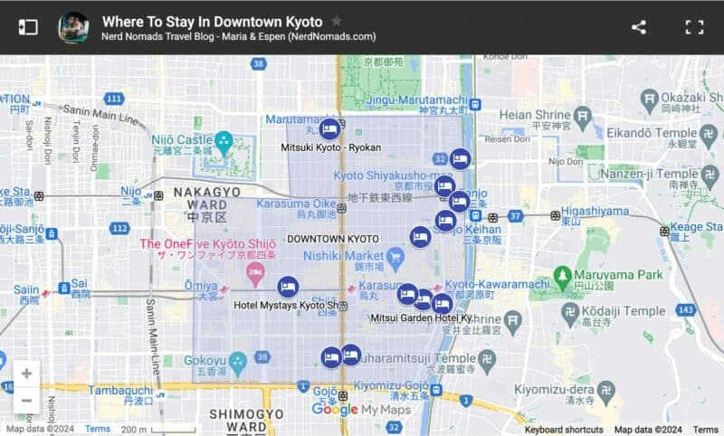
（京都の碁盤目街並みと細い伝統路地。低層で密集、緑や寺が点在）
### 比較まとめ
**基本パターン**
パリ：放射状＋一部グリッド
京都：整然とした碁盤目
**道の幅**
パリ：非常に広い（数十m）
京都：幹線は広いが路地は狭い
**印象**
パリ：開放的・華やか・スケール大
京都：親密・静か・発見型
**歩きやすさ**
パリ：カフェ文化に最適
京都：路地散策・寺巡りに最適
**車との関係**
パリ：車優先だったが現在歩行者化推進
京都：車が通りづらく観光バス課題
**観光客目線**だと、パリは「堂々と歩く」感じ、京都は「路地をそぞろ歩く」感じ。京都の狭い道が混雑を生む一因にもなっています（観光客が集中しやすい）。
この対照が両都市の魅力の源泉ですよね。パリのグランドール vs 京都の繊細さ。
実際に歩いた経験や、特定のエリア（例: 祇園 vs マレ地区）の話をもっと聞きたい？ それとも地図で比較しますか？
🎯 京都人に道を尋ねると斜め方向を指さして「だいたいあっち」と答えるらしいね。道があれだから。
⏩️ **そうそう、まさにそれ！**
京都人の道案内は観光客から「独特すぎる」とよく言われますよね。「だいたいあっち」＋斜め指差しは少し大げさバージョンだけど、**本質は当たってる**んです。
### 京都道案内のリアル
- 京都人は**東西南北（＋上がる/下がる）**を基準に答える
例：「四条通を東へ上がって、河原町通を南に入った西側やで」
→ 観光客には「？？？」になるけど、地元民には超精密。
- 碁盤の目だから**方角さえ合えば絶対迷わない**という自信がある。
- 結果、**目印（建物や店名）より方向を重視**するので、初めての人には「 vague（曖昧）」に感じる。
- 狭い路地が多いから、細かい曲がり角を全部説明しきれない → 「だいたいあっち方面」になりやすい。
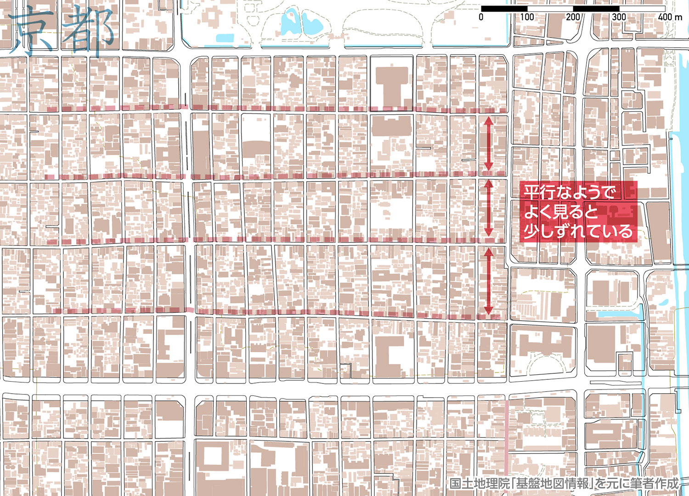
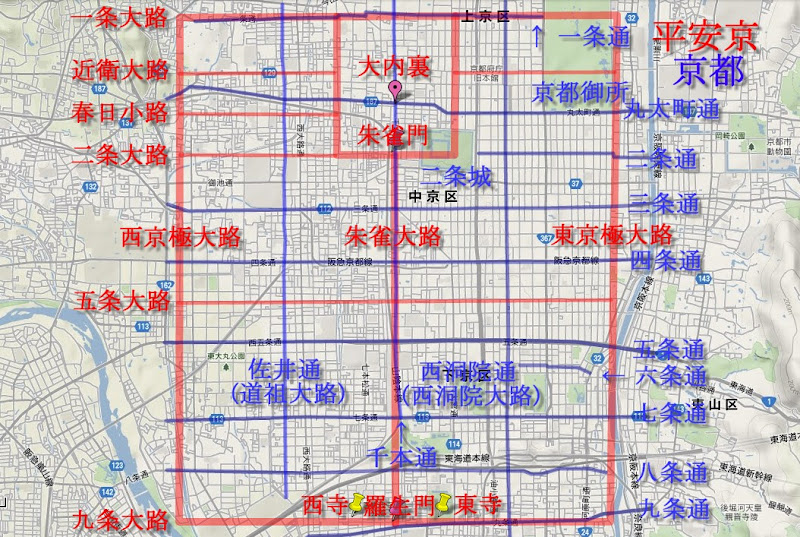
（京都の碁盤の目マップ。平行に見えて微妙にずれているのも面白い）
### パリはどうか？
パリは**ハウスマン大通り**のおかげで、
- 「エッフェル塔方面にまっすぐ行って、セーヌ川を渡ったら右」
みたいな**ランドマーク＋直線**中心の案内になりやすい。
- 道が広い＋放射状なので、**斜め指差しも少ない**（むしろ「この大通りをずっと行け」）。
- ただ、路地裏に入るとパリも迷う人は多いです。
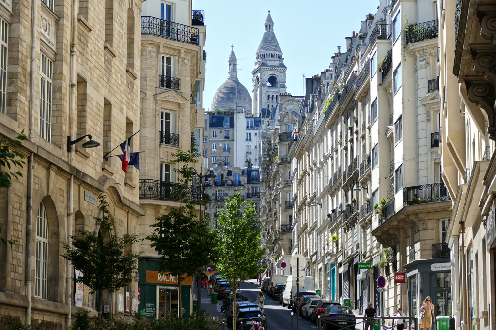
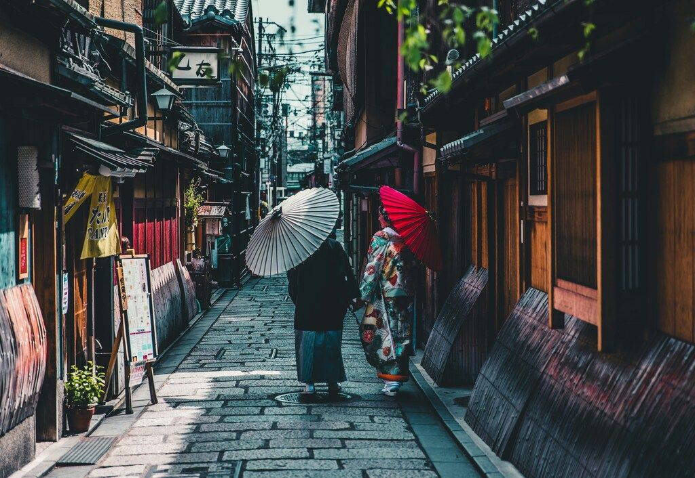
（左：パリの比較的広い街路 / 右：京都の細い路地）
### 京都道案内あるある比較表
**基本基準**
京都人：方角（東西南北・上がる）
パリ人：ランドマーク＋通り名
**指差しの角度**
京都人：斜め多め
パリ人：直線・大通り中心
**詳細度**
京都人：方向重視、店名は後回し
パリ人：目印（カフェ、教会など）重視
**観光客へのわかりやすさ**
京都人：★☆☆（慣れが必要）
パリ人：★★★（直感的）
京都に慣れると、この「方角文化」がすごく便利になります。
Googleマップを見せながら「ここです！」って聞くと親切に教えてくれる人も多いですよ。
実際に京都で道聞かれた経験ある？ それとも「こんな変な案内された」エピソードあったら教えて！
もっと京都の通り名（数え唄とか）も掘り下げますか？